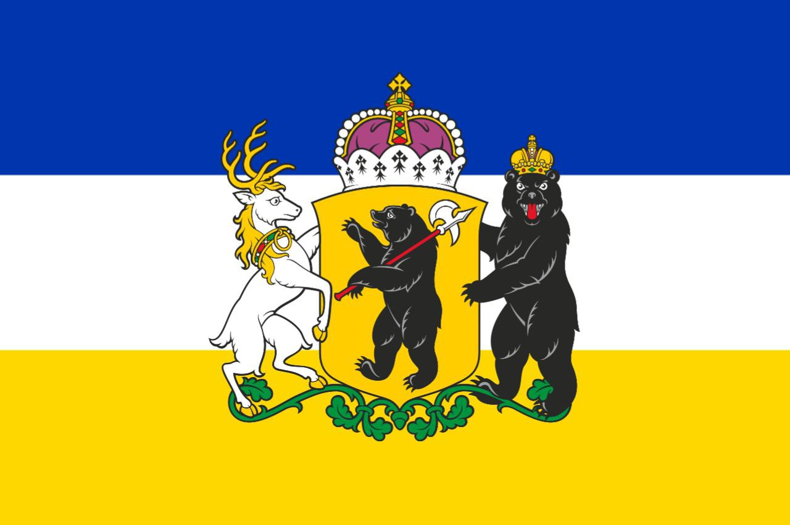

Іофронія - це вигадана країна у Майнкрафті, яка складається з декількох міст: Краматорськ, Ярославль,
Буляград, Олександрівськ, Марманськ, Корг й Грюєр. За основу було взяті інші міста.
Краматорськ є столицею моєї країни. Перед вами зображен флаг країни.
Деякі фотографії у вкладці "HOME"